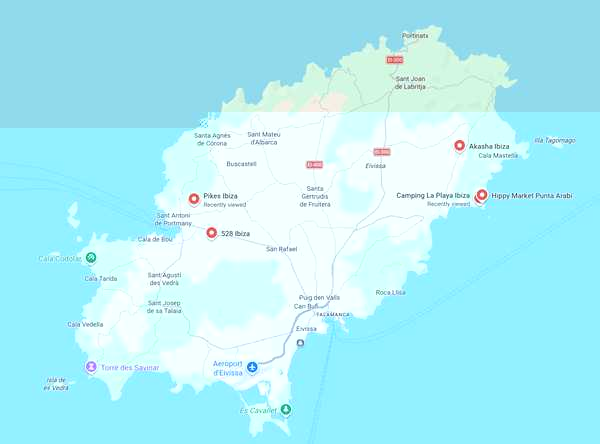

The plan
Early June should give us a proper Ibiza season without committing ourselves to peak-summer heat, crowds and prices.
Exact dates stay flexible until the 2027 Pikes/528 lineups appear, so we can shift by a few days if something especially good lands nearby.
Camping La Playa, with Es Canar and Punta Arabí within easy walking distance.
Likely one Pikes, one 528, and perhaps one Akasha night depending on the programme.
Where we stay
Camping La Playa Ibiza
Beachfront at Cala Martina, near Es Canar. Accommodation includes bungalows, glamping tents and vintage caravans, so nobody needs to bring camping gear.
The campsite is right on the beach, with a beachside bar and restaurant, so it still feels like a proper seaside base even on the quieter days and evenings.
Why this base works
🌊 Cala Martina beach at the campsite
🌴 Es Canar around 10–15 minutes away on foot
🛍️ Punta Arabí hippy market practically next door
🪩 Akasha / Las Dalias only a short taxi away
🌅 Cala Nova easy for a beach-day excursion
🍹 Chirincana beach bar for low-key evenings
Flights
Both Manchester and Birmingham have direct summer flights to Ibiza, so we can compare whichever works best once the exact early-June dates are fixed.
Manchester → Ibiza
Jet2, Ryanair and easyJet all operate direct services in season, giving plenty of schedule choice.
Ballpark return fare: about £160–£200 per person before checked luggage, based on current early-June 2027 Jet2 pricing. Other airlines may undercut this.
Birmingham → Ibiza
Direct summer flights are available, making Birmingham a straightforward alternative departure point for the group.
Ballpark return fare: roughly £150–£380 per person before checked luggage on current early-June 2027 Jet2 pricing. Birmingham is unusually date-sensitive, so shifting by a day or two could make a very large difference.
Getting around
Hire car for daytime freedom. Taxis for club nights.
🚗 Hire car
Pick up at Ibiza Airport and keep it for the stay. Useful for beaches, villages, supermarkets, Ibiza Town and anything inland.
One-week planning estimate: about £250–£320 for a small car in early June. Current Ibiza averages are around £38/day for a small car and about £301 for a week overall; optional excess cover, automatic transmission or a larger vehicle can push this higher.
Airport → campsite: around 30–35 minutes by road.
The campsite has parking.
🚕 Nights Out
For Pikes and 528, arrange the outbound taxi in advance through the campsite where possible. Returning should be easier because both venues are accustomed to moving people out by taxi.
For 528, there is also a post-event shuttle back toward San Antonio, giving us a useful fallback if the taxi queue becomes feral.
Raving
The reason we are not simply booking “whatever Ibiza superclub is famous”: these three are much closer to the music and crowd we actually want.
Pikes Ibiza
Intimate, 27+, grown-up and music-led. Strong house, disco, Balearic and heritage-DJ DNA.
528 Ibiza
Outdoor/garden-led events with plenty of classic and established dance names. Often hosts Pikes Presents nights.
Akasha
Only 300 capacity, so this is genuinely tiny by Ibiza standards. Atmospheric club attached to Las Dalias, more eclectic / Balearic / house / electronic than nostalgia-led, with a generally more mature musical crowd.
What’s local
This is the important bit: the trip should still feel excellent on the days and nights when we are not heading to a proper club.
Trip map
All the places we care about, ready to open in Google Maps.
📍 Ibiza pins
Open the whole set as a Google Maps route, or jump straight to an individual location.
